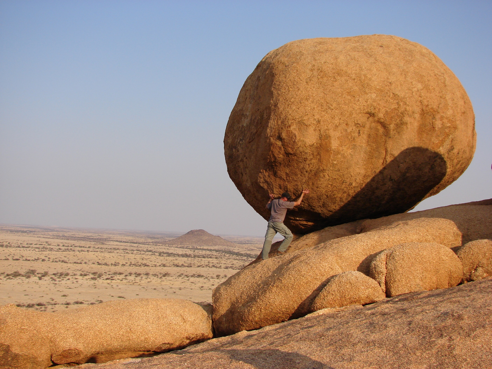

Determination

Great photo by Vicky Sim on Unsplash
The above photo is the end result of our fourth and final recipe. Looks great doesn't it?
Want to try it, why wouldn't you? Check below for the ingredients.
- Grit
- Coding attempts each day
- Time
- Reminders of how important this is
In order to get this final recipe right, follow the steps below.
- You are being taught this from the ground up, so expect to stumble at multiple points
- Go through The Odin Project, from start to finish
- Remember that there are other resources available, use them
- Remember what you want in the future, and that backing out of this means impacting that
If you followed the steps in this recipe, you might have some determination on the table. That determination might result in a software development job in the future. Fingers crossed.
Before you end your time on this website, please click here